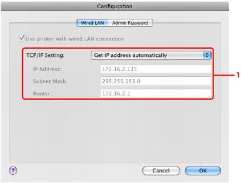

Note
Note-
Select Wireless LAN active in Change wireless/wired under LAN settings on the Operation Panel to change the settings in the Wireless LAN sheet.
 Changing the Machine Settings on the LCD
Changing the Machine Settings on the LCD
-
Start up IJ Network Tool.
-
Select the printer in Printers.
-
Click the Configuration button.
-
Click the Wired LAN button.
Click OK after changing configuration. A dialog is displayed asking you for confirmation before the settings are sent to the printer. If you click OK, the settings are sent to the printer and the Transmitted Settings dialog is displayed.
-
TCP/IP Setting
Sets the IP address of the printer to be used over the LAN. Set a value appropriate for your network environment.
- Get IP address automatically
-
Select this option to use an IP address automatically assigned by a DHCP server. DHCP server functionality must be enabled on your wireless LAN router or access point.
- Use following IP address
-
If no DHCP server functionality is available in your setup where you use the printer or you want to use a particular IP address, select this option to use a fixed IP address.
-